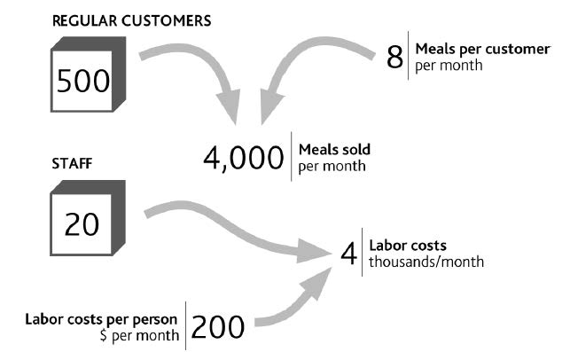

First, we need to identify resources, and then we need to understand a crucial feature of how they behave. Let us go back to the example of your restaurant and see how we can explain the history of your business performance over the past 12 months, shown in Figure 1.4 "Restaurant Performance Example".
Your restaurant is well known in its local market and largely relies on regular customers who on average visit eight times per month. You estimate that you have about 500 regular customers. You have 20 staff in total, each costing you $200 per month for the hours they work. The explanation for your sales and labor costs are therefore as shown in Figure 2.1 "The Explanation for Restaurant Sales and Labor Costs".
“Regular customers” and “Staff” are shown in boxes here because they are two major tangible resources in this business. Your cash and your restaurant’s seating capacity are two further resources. These items are critically important because if they do not change, neither does your business performance, provided of course that outside conditions such as competitive prices, the frequency with which customers visit your restaurant, and so on do not change either. If these resource levels do change, your profits must change immediately.
The first point to note is that resourcesUseful items that are owned or to which an organization has reliable access. They are the foundation of an organization's performance. are useful items that you own or to which you have reliable access. “Useful” simply means that they contribute to the rest of the business, either directly by providing sales or indirectly by supporting other items. You do not have to possess a resource for it to be useful. You do not “own” customers or agents, for example, but they are still somewhat reliable: There is a good chance that they will be with you tomorrow.
Figure 2.1 The Explanation for Restaurant Sales and Labor Costs
There is, however, one fundamental feature that customers and staff share, along with all other resources: The quantity of a resource that you have today is precisely the total of everything you have ever won minus everything you have ever lost. We will look at the implications of this in Chapter 3 "Resources and Bathtub Behavior". But for now we simply need to connect your restaurant’s resources to sales and costs to create a complete explanation for your operating profit at the start of the year (Figure 2.2 "Your Restaurant’s Resources and Operating Profits").
To understand why customer numbers change through time to create our profit history, we need to learn more about how resources behave. Again, we will cover this in Chapter 3 "Resources and Bathtub Behavior".